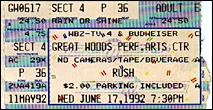

|
June 17, 1992 Great Woods Center. Mansfield, MA
 scan by Ray Lambert
The Boston Globe
Rush drops the stone-faced act and has fun MANSFIELD -- There were dice on bassist Geddy Lee's amp and, at one point, on the three video screens flaking the stage. But Rush is a technically polished band that leaves little to chance in concert. True, the Canadian power trio's crew had trouble sharpening the sound mix in the Great Woods shed last night for a rare outdoor local show by Rush. Hey, they're used to indoor arenas. But Rush often tends toward busy, methodical execution that works its way into a blur anyway. Certainly that was the case in the opening stretch of the group's soldout show for a throng of 15,000 that soaked in the two-hour-plus show, then shared a war whoop on the way out. Perhaps it was a reaction to that encore medley that fused the heady old instrumentals "La Villa Strangiato" and "YYZ" before exploding into the Ayn Rand-inspired "Anthem," striking a chord for personal freedom. By contrast, the set's first half-dozen songs were delivered with static precision, heavy on video accompaniment and drummer Neil Peart's mathematical dexterity (when he dons headphones for certain songs, does he listen to equations?). You know when Rush shows Aimee Mann singing on video during the hit "Time Stand Still," it would gum up the works to conceive of her making a live cameo for the group's Boston stop. Nonetheless, as Lee later sang in the clap-along "Spirit of the Radio," "All this machinery making modern music can still be open-hearted." Rush might push the envelope as a three-piece, leaning on electronic triggers in concert. But the band also rocked out during a mid-set peak that began with new song "Roll the Bones" (with video dice turning into rapping skeletons), followed by the hard-edged blasts through "Show Don't Tell" and "The Big Money" that broke cruise control with Peart's muscular fills. And you can't say Rush doesn't depart from stone-faced delivery to have fun. Guitarist Alex Lifeson was especially frisky, playing to fans near the stage with hand motions to mimic his whammy bar sustains. And the giant inflatable rabbits jiggling for "Tom Sawyer" are now predictable, but still a good goof on arena excess. Granted, the visual end of Rush's show -- cartoonish videos, lasers and spacey roving lights -- add a touch of pretension. But Rush has always balanced energetic kicks and textural twists. And the program played to old as well as new fans with inclusions such as "Free Will," "Analog Kid" and late '70s art-rock nuggets "The Trees" and "Xanadu," flavored by tricky cowbell patterns from Peart, who also did his usual everything-but-the-kitchen-sink powerhouse solo. Powerhouse solos were the best thing going for opener Mr. Big, and they fell flat, as both bassist Billy Sheehan and guitarist Paul Gilbert flogged speed licks (and Gilbert pulled out a power drill pick a la Eddie Van Halen). With a combination of MTV power balladry (the hit "To Be With You") and forced-flair rock, Mr. Big lacked all the smarts of Rush, whose hit love song "Ghost of a Chance" even had a philosophical tone. Ironically, Mr. Big's final number was "Addicted to That Rush." During an encore of "2112," on cue, Rush fans yelled "Hey!" en masse in agreement.
|